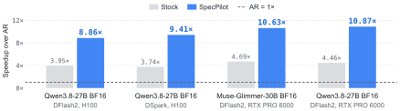
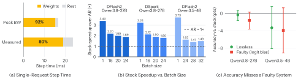
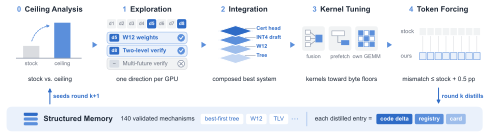
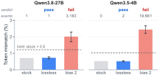
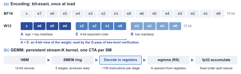
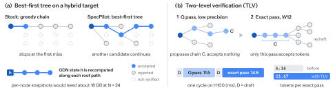
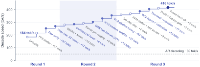
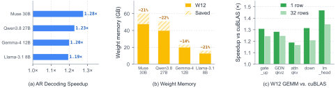

The idea in a minute
Speculative decoding lets a lightweight drafter propose tokens that the target model checks in one forward pass[1,2]. Parallel drafters such as DFlash, DFlash2 and DSpark[3–5] draft a whole block of 8 or 16 tokens per pass. Their released systems (stock) still leave much of this speed unused, and the right fix depends on the deployment: its serving regime, drafter, target model and GPU. Tuning each deployment by hand does not scale, so we hand the job to coding agents, as agentic optimizers such as AlphaEvolve[8] do for other programs.
Find where speed is lost. A cost model compares the measured system with an estimated ceiling and ranks the gaps.
Search in parallel. Agents explore several directions on separate GPUs, and validated pieces stack into one system, so small gains add up.
Accept only real, lossless gains. An isolated controller promotes a change only on a significant gain confirmed on unseen requests, and token forcing checks every output token against stock.
Remember what works. Validated mechanisms become memory entries with replayable code and evidence, reused in later rounds and new deployments.
Across four target models, three drafters, two GPU platforms and five benchmarks, SpecPilot raises the speedup over AR from stock's 4.46× to 10.87× with one request, and from 1.94× to 3.93× with batching.
Where speculative decoding loses speed
A cost model writes the speedup over AR decoding as the tokens a step accepts divided by what the step costs:
S(N) = τ(N) / c(N), c(N) = Tstep(N) / TAR
Here τ is the number of tokens a step accepts when it verifies N rows, and c is the step time relative to one AR step. Both terms leave a lot on the table, and which one matters depends on the serving regime.
Stock ignores most of its drafter's candidates
Stock verifies only one drafted chain, although its drafter ranks other candidates at each position that often include the target's next token. Replaying recorded drafts offline, stock DFlash2's 8-position chain accepts 4.25 tokens per step. An oracle that keeps accepting the target's token while it stays in the drafter's top 16 would accept 6.42 at 8 positions and 8.20 at 16.
With one request, the step is a weight stream
Reading the target's weights dominates the step, so verifying more rows is nearly free. GEMM time grew only from 17.88 ms for one row to 18.58 ms for 64. After the first optimization round, weight reads still took 80% of the 23.61 ms step.
With batching, every row costs time
Each batched request adds its own attention, recurrent-state and prefill work, so weight reads no longer dominate. Stock DFlash2's speedup over AR on Qwen3.8-27B in FP8 falls from 3.40× with one request to 1.89× with 24.

To rank these gaps, the cost model computes a ceiling: the speedup a step could reach if it verified the best tree in one exact pass and ran every kernel at its byte floor, the larger of its FLOP time and its byte time at realistic peak rates. The ceiling splits into three factors, for better trees, faster kernels and time outside the profile. Each round, the largest factor tells the agents where to look.
The SpecPilot loop
SpecPilot works in rounds. Each round measures where the current system loses speed, lets agents build and time changes, and ends with a sealed test on requests the agents never saw. The next round starts from that result, and a new deployment starts from stock plus what memory already holds.

Agents propose, a controller decides
A master agent plans directions, one idea per GPU, each with an estimated headroom. Sub-agents implement them as patches behind options whose defaults reproduce stock. A controller, made of scripts the agents can call but cannot modify, times each patch against the current best in paired runs on two GPUs. It promotes a patch only if the 95% lower bound of its gain exceeds 1% plus twice the stock-versus-stock noise, which is below 0.1% for one request on H100. Many patches gain too little alone, so an integration sub-agent stacks them and times the stack under the same rule.
Token forcing catches what accuracy misses
An agent rewarded for speed may adopt a faster numerical shortcut that changes outputs without a visible drop in accuracy. Token forcing feeds the system's outputs back through the target on the stock engine and flags every token that differs from the scorer's argmax. Stock itself mismatches on 0.72% of tokens, almost all near-ties from kernel rounding. A system is rejected if its mismatch rate exceeds stock's by more than 0.5 points at 95% confidence, or if it has more unexplained large-margin mismatches than stock.

In this test, the lossless systems match stock's mismatch rates (0.73% and 0.52% against 0.72% and 0.53%), while the faulty ones reach 2.0% and 2.4% and are rejected. Task accuracy could not tell them apart: on Qwen3.8-27B it changed by −0.3 points for the lossless system and −1.6 for the faulty one, with overlapping intervals.
Memory carries mechanisms forward
After each sealed final, every promoted mechanism becomes a memory entry: a code delta against the entries it requires, its options and correctness contract, and a summary of its evidence and limits. An entry is kept only if applying it to stock reproduces its source system's code exactly. Reused entries are re-tuned and re-timed in each new deployment. The memory now holds 140 entries.
What the agents discovered
Each mechanism targets a gap the cost model measured. All of them are lossless, because only an exact pass over the target weights accepts tokens.
W12: a lossless 12-bit weight format
Most BF16 weights in an output channel span only a few powers of two. W12 picks, for each channel, the 16-binade window that covers the most weights and stores each weight as its sign, a 4-bit exponent offset and its seven mantissa bits, 12 bits in total. Weights outside the window go to a sparse escape list that restores them exactly. W12 averages 12.01–12.02 bits per weight on eight dense models and shrinks Qwen3.8-27B's converted layers from 44.67 to 33.58 GB. The server checks every decoded tensor against the checkpoint bit for bit.

The format alone would not help if decoding cost time. The W12 GEMM decodes in registers, hidden behind the memory stream, and beats cuBLAS on every Qwen3.8-27B projection, by 1.19–1.47× at one row and 1.17–1.35× at 32 rows.
Best-first trees on hybrid targets
Instead of one chain, SpecPilot verifies a best-first tree of the 32 nodes with the highest path score, scoring each edge given its parent. In offline replay, this raises tokens per step from 4.25 for stock's chain to 5.38 on the same lattice, and to 5.85 when the drafter runs 16 positions. Hybrid targets such as Qwen3.8-27B[9] make trees hard, because 48 of 64 layers carry a Gated DeltaNet[10] recurrent state that stock snapshots at every verified position. SpecPilot instead recomputes the state along each root path. A WY verify kernel, following TreeWY[11], solves all paths at once on tensor cores and stays within one BF16 ulp of the exact path kernel.
Two-level verification
With trees near their best and W12 near its byte floor, the remaining headroom lay in an assumption of the ceiling itself: one draft per exact pass. Two-level verification (TLV) first runs a cheap Q pass over the 8-bit view already nested in each W12 record. The Q pass proposes a chain but accepts nothing. The drafter drafts again from the end of that chain, and one exact pass verifies both drafts together. This nearly doubles the tokens accepted per exact pass, and needs no separate low-precision copy of the model.

Batched serving
With batching, the useful mechanisms are the ones that choose rows carefully. Requests share one node budget sized to a flat stretch of the target GEMM's cost, and since best-first trees are prefix-closed, each request's share is still a valid tree. Each request drafts 16, 12 or 8 positions depending on its recent acceptance. New prompts enter the verify step so that one weight stream serves both, but only when the scheduler would otherwise hold them back.
Results
We evaluate on SGLang[12] with one H100 SXM5 or one RTX PRO 6000 Blackwell GPU, greedy decoding with thinking enabled, and requests from GSM8K, MATH500, HumanEval, MBPP and MT-Bench. Agents are Claude Opus 5.5 in Claude Code[13]. Stock is tuned for each GPU and regime with the fastest upstream options we found. Gains over stock come from sealed finals on unseen requests, and speedups over AR come from interleaved runs on development requests, within −2% to +6% of the sealed gains.
| Target | Drafter | Stock | SpecPilot | Gain |
|---|---|---|---|---|
| Single request, H100 SXM5 | ||||
| Qwen3.8-27B | DFlash2 | 3.95× | 8.86× | 2.13× |
| Qwen3.8-27B | DSpark | 3.74× | 9.41× | 2.38× |
| Single request, RTX PRO 6000 | ||||
| Qwen3.8-27B | DFlash2 | 4.46× | 10.87× | 2.44× |
| Muse-Glimmer-30B | DFlash2 | 4.69× | 10.63× | 2.21× |
| Batching, H100 SXM5 | ||||
| Qwen3.8-27B FP8 | DFlash2 | 2.02× | 3.90× | 1.85× |
| Qwen3.8-27B FP8 | DSpark | 1.94× | 3.93× | 1.94× |
| Qwen3.5-4B | DFlash2 | 1.51× | 3.77× | 2.39× |
| Gemma-4-12B | EAGLE-3 | 0.68× | 2.09× | 3.11× |
With one request, SpecPilot is more than twice as fast as stock everywhere, and on H100 it is also 1.84× faster than a stronger baseline that adds DDTree[7] trees to stock. With batching it beats stock at every batch size. Targets with weaker stock gain the most, including Gemma-4-12B, where stock EAGLE-3[6] is slower than AR.
Per-benchmark speedups over AR
| Model | Method | GSM8K | MATH500 | HumanEval | MBPP | MT-Bench | Avg. | τ |
|---|---|---|---|---|---|---|---|---|
| Single request, H100 SXM5 | ||||||||
| Qwen3.8-27B | DFlash2 | 4.47× | 4.31× | 3.86× | 3.83× | 3.36× | 3.95× | 4.65 |
| +SpecPilot | 10.33× | 10.00× | 8.49× | 8.24× | 7.55× | 8.86× | 13.08 | |
| Qwen3.8-27B | DSpark | 4.43× | 4.15× | 3.57× | 3.50× | 3.17× | 3.74× | 4.42 |
| +SpecPilot | 11.01× | 10.69× | 8.86× | 9.02× | 7.85× | 9.41× | 12.85 | |
| Single request, RTX PRO 6000 | ||||||||
| Qwen3.8-27B | DFlash2 | 5.23× | 4.81× | 4.47× | 4.24× | 3.72× | 4.46× | 5.23 |
| +SpecPilot | 12.83× | 11.99× | 10.47× | 10.55× | 8.93× | 10.87× | 12.80 | |
| Muse-Glimmer-30B | DFlash2 | 5.08× | 5.64× | 4.91× | 4.59× | 3.50× | 4.69× | 5.16 |
| +SpecPilot | 11.47× | 12.85× | 10.75× | 10.25× | 8.34× | 10.63× | 12.64 | |
| Batching, H100 SXM5 | ||||||||
| Qwen3.8-27B FP8 | DFlash2 | 2.11× | 2.19× | 2.05× | 2.12× | 1.69× | 2.02× | 4.56 |
| +SpecPilot | 4.39× | 4.33× | 3.81× | 4.07× | 3.07× | 3.90× | 5.39 | |
| Qwen3.8-27B FP8 | DSpark | 2.12× | 2.16× | 1.95× | 1.96× | 1.56× | 1.94× | 4.37 |
| +SpecPilot | 4.60× | 4.39× | 3.82× | 3.97× | 3.05× | 3.93× | 5.42 | |
| Qwen3.5-4B | DFlash2 | 1.62× | 1.88× | 1.60× | 1.27× | 1.25× | 1.51× | 6.58 |
| +SpecPilot | 4.04× | 4.61× | 4.00× | 3.30× | 3.11× | 3.77× | 6.97 | |
| Gemma-4-12B | EAGLE-3 | 0.69× | 0.79× | 0.66× | 0.69× | 0.61× | 0.68× | 2.04 |
| +SpecPilot | 2.28× | 2.41× | 2.22× | 1.88× | 1.74× | 2.09× | 2.54 | |
τ is the average number of tokens accepted per exact target pass. Batched results average 16/20/24 requests on Qwen3.8-27B FP8, 24/28/32 on Qwen3.5-4B and 16/32/48 on Gemma-4-12B.
Three rounds, three different bottlenecks
On H100 with one request, the system went from stock's 184 to 416 tokens/s in three rounds. Each round the cost model re-measured the ceiling, and the agents moved to the factor holding the most speed instead of refining the last gain.

Round one built best-first trees and reached 270 tokens/s. Round two attacked the weight reads, which took 80% of the step, with W12. Round three found trees and kernels near their limits, so it removed the one-draft-per-pass assumption with TLV. A single-agent loop without the cost model, run for the same three rounds, reached only 1.34× over stock against SpecPilot's 2.13×. It kept adding to tokens per step, the most visible gap, and never addressed the weight reads.
Memory carries gains to new deployments
New deployments reuse validated mechanisms and adapt them. DSpark reused the tree, W12 and TLV entries, which one promotion applied together at 2.110×. On the RTX PRO 6000, which lacks Hopper's wgmma instructions, porting the tree and W12 entries alone gave a sealed 1.92× over stock, and the final 2.44× exceeds the 2.12× ceiling that assumes one draft per pass. Muse-Glimmer-30B, a dense model, reused memory except the recurrent-layer entries and reached 2.21×. Even EAGLE-3, a sequential drafter, reimplemented W12 and prompt admission from memory on its way to 3.11×.
W12 beyond speculative decoding
W12 is useful on its own. Every dense model we encoded, from six families, compresses to about 12 bits per weight without changing any output. Its GEMM speeds up any matrix product bound by weight bytes, including the single row of plain AR decoding.

In SGLang without speculation, W12 alone speeds up AR decoding by 1.19–1.28× with one request and 1.13–1.20× with 32 requests, on four models from 8B to 30B. It shrinks the weights by 14–22%, which grows the KV cache pool 2.0× on Qwen3.8-27B and 2.5× on Muse-Glimmer-30B. Earlier lossless formats decode weights before the GEMM or do not consistently beat cuBLAS on HBM GPUs. To our knowledge, W12 is the first lossless format whose GEMM beats cuBLAS on H100.
Lossless speedups, found per deployment. SpecPilot follows the largest measured gap from round to round, verifies every change against stock, and carries what it learns to new drafters, models and GPUs.
References
- Leviathan, Kalman and Matias (2023). Fast Inference from Transformers via Speculative Decoding. ICML.
- Chen et al. (2023). Accelerating Large Language Model Decoding with Speculative Sampling. arXiv:2302.01318.
- Chen, Liang and Liu (2026). DFlash: Block Diffusion for Flash Speculative Decoding. ICML.
- Inco AI (2026). DFlash 2: Keep Drafting Parallel.
- Cheng et al. (2026). DSpark: Confidence-Scheduled Speculative Decoding with Semi-Autoregressive Generation. arXiv:2607.05147.
- Li et al. (2025). EAGLE-3: Scaling up Inference Acceleration of Large Language Models via Training-Time Test. NeurIPS.
- Ringel and Romano (2026). Accelerating Speculative Decoding with Block Diffusion Draft Trees. arXiv:2604.12989.
- Novikov et al. (2025). AlphaEvolve: A Coding Agent for Scientific and Algorithmic Discovery. arXiv:2506.13131.
- Qwen Team (2026). Qwen3.8-27B.
- Yang, Kautz and Hatamizadeh (2025). Gated Delta Networks: Improving Mamba2 with Delta Rule. ICLR.
- Ghantasala (2026). TreeWY: Speculative Verification for Gated DeltaNet Hybrids. arXiv:2608.20961.
- Zheng et al. (2024). SGLang: Efficient Execution of Structured Language Model Programs. NeurIPS.
- Anthropic (2025). Claude Code.
BibTeX
@misc{li2026specpilot,
title = {SpecPilot: Autonomous Algorithm Discovery and Systems
Optimization for Speculative Decoding},
author = {Li, Kunjun and Chai, Wenhao and Liang, Yihao and Hu, Yuezhou
and Xu, Shuyao and Pan, Yi and Zheng, William X.
and Ramchandran, Kannan and Keutzer, Kurt and Jiao, Jiantao},
year = {2026},
eprint = {xxxx.xxxxx},
archivePrefix = {arXiv},
primaryClass = {cs.LG}
}